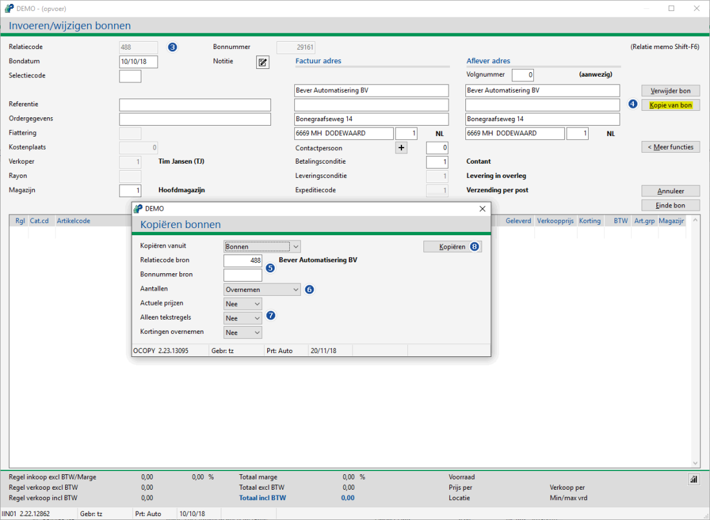
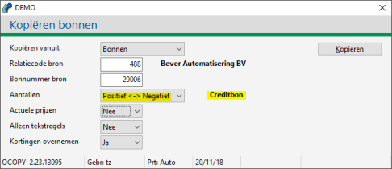

In Powerall Connect kan op een gemakkelijke manier een 100% kopie van een bon, order gemaakt worden. Dit is mogelijk bij:
Onderstaand wordt er vanuit gegaan dat bonnen gebruikt wordt, maar dit kan ook een ander programma zijn.
Voor het maken van een credit nota zie: Hoe maak ik een creditnota?
Om een kopiebon te maken, doorloopt u de volgende stappen:
Ga naar Selecteren bonnen (FS).
Kies voor de knop Nieuw.
Het scherm Invoeren/wijzigen verschijnt.
Selecteer de relatiecode en druk op twee keer op Enter.
De knop Kopie van bon / <xxx> order verschijnt.
Vul de verplichte velden in de kop in.
Kies voor de knop Kopie van bon.
Het scherm Kopiëren bonnen verschijnt.
Selecteer de relatiecode bron of bonnummer bron.

Selecteer bij aantallen de optie:
Overnemen, aantallen worden overgenomen.
Nulstellen, aantallen wordt 0.
Positief <> negatief, aantallen worden bij positief negatief (en andersom) bij Creditbon of nota.
Tip: Selecteer deze optie bij een creditnota.

Indien nodig wijzig de opties actuele prijzen / alleen tekstregels / kortingen overnemen.
Kies voor de knop Kopiëren.
De melding Bon is gekopieerd verschijnt.
Kies voor de knop OK.
De gegevens zijn gekopieerd naar de bon of order.
Tip: Als een bon op een verkeerde relatie gemaakt is, kan de bon gekopieerd worden naar de juiste relatiecode.
Belangrijk: Bij een credit werkorder worden de uren (d.m.v. urenregistratie) niet gecrediteerd, negatieve uren zijn niet mogelijk op een werkbon.
Het handigste is om de bon te crediteren (bij urenregels staan deze er ook op).
Gerelateerde onderwerpen
Copyright ©